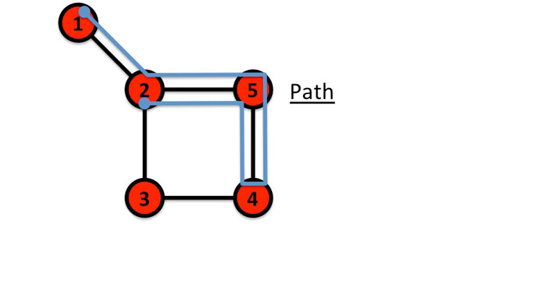

Chapter 2 THE BRIDGES OF KÖNIGSBERG
Image 2.1
The bridges of Königsberg. From the contemporary map of Königsberg (now Kaliningrad, Russia) to Euler’s graph. The graph constructed by Euler consists of four nodes (A, B, C, D), each corresponding to a patch of land, and seven links, each corresponding to a bridge. Euler showed in 1736 that there is no continuous path that would cross seven the bridges while never crossing the same bridge twice. The people of Königsberg agreed with him, gave up their fruitless search and in 1875 they built a new bridge between B and C, increasing the number of links of these two nodes to four. Now only one node was left with an odd number of links and it became rather straightforward to find the desired path.
Few research fields can trace their birth to a single moment and place in history. Graph theory, the mathematical scaffold behind network science, can. Its roots go back to 1736 to Königsberg, the capital of Eastern Prussia and a thriving merchant city of its time. The trade supported by its busy fleet of ships allowed city officials to build seven bridges across the river Pregel that surrounded the town. Five of these connected the elegant island Kneiphof, caught between the two branches of the Pregel, to the mainland; two crossed the two branches of the river (Image 2.1). This peculiar arrangement gave birth to a contemporary puzzle: Can one walk across all seven bridges and never cross the same one twice? Despite many attempts, no one could find such path. The problem remained unsolved until 1735, when Leonard Euler, a Swiss born mathematician, offered a rigorous mathematical proof that such path does not exist.
Euler represented each of the four land areas separated by the river with letters A, B, C, and D. (Image 2.1). Next he connected with lines each piece of land that had a bridge between them. He thus built a graph, whose nodes were pieces of land and links were the bridges. Then Euler made a simple observation: if there is a path crossing all bridges, but never the same bridge twice, then nodes with odd number of links must be either the starting or the end point of this path. Indeed, if you arrive to a node with an odd number of links you may eventually have no unused link for you to leave it. A continuous path that goes through all bridges can have only one starting and one end point. Thus such a path cannot exist on a graph that has more than two nodes with an odd number of links. The Königsberg graph had three nodes with an odd number of links, B, C, and D, so no path could satisfy the problem.
Euler’s proof was the first time someone solved a mathematical problem by turning it into a graph. For us the proof has two important messages: the first is that some problems become simpler and more treatable if they are represented as a graph. The second is that the existence of the path does not depend on our ingenuity to find it. Rather, it is a property of the graph. Indeed, given the structure of the Königsberg graph, no matter how smart we are, we will never find the desired path. In other words, networks have properties hidden in their structure that limit or enhance their behavior. To fully understand how networks affect the properties of a system, we need to become familiar with graph theory, a branch of mathematics that grew out of Euler’s proof, offering a formalism that will be used throughout this book.
2.2 NETWORKS AND GRAPHS
If we want to understand a complex system, we first need a map of its wiring diagram. A network is a catalog of a system’s components often called nodes or vertices and the direct interactions between them, called links or edges (Box 2.1). The network representation offers a common language to study systems that may differ greatly in nature, appearance, or scope. Indeed as shown in Image 2.3, three rather different systems have exactly the same network representation.
Box 2.1 Networks or graphs?
In the scientific literature the terms network and graph are used interchangeably. Yet, there is a subtle distinction between the two terminologies: the network, node, and link combination often refers to real systems: the WWW is a network of web pages connected by URLs; society is a network of individuals connected by family, friendship or professional ties; the metabolic network is the sum of all chemical reactions that take place in a cell. In contrast, we use the terms graph, vertex, and edge when we talk about the mathematical representation of these networks: we talk about the web graph, the social graph (a term made popular by Facebook), or the metabolic graph. Yet, this distinction is rarely made, so these two terminologies are often used as synonyms of each other.
| Network Science | Graph Theory |
|---|---|
| network | graph |
| node | vertex |
| link | edge |
Image 2.3 also introduces two basic network parameters:
Number of nodes, which we denote with N, representing the number of components in the system. We will often call N the size of the network.
Number of links, which we denote with L, representing the total number of interactions between the nodes.
The networks shown in Image 2.1 all have N = 4 and L = 4. To distinguish the nodes, we label them i = 1, 2, ..., N. The links are rarely labeled, as they can be identified through the nodes they connect. For example, the (2, 4) link connects nodes 2 and 4.
Image 2.3
Real systems of quite different nature can have the same network representation. In the figure we show a small subset of (a) the Internet, where routers (specialized computers) are connected to each other; (b) the Hollywood actor network, where two actors are connected if they played in the same movie; (c) a protein-protein interaction network, where two proteins are connected if there is experimental evidence that they can bind to each other in the cell. While the nature of the nodes and the links differs widely, each network has the same graph representation, consisting of N = 4 nodes and L = 4 links, shown in (d).
The links of a network can be directed or undirected. Some systems have directed links, like the WWW, whose uniform resource locators (URL) point from one web document to the other, or phone calls, where one person calls the other. Other systems display undirected links, like romantic ties: if I date Janet, Janet also dates me, or transmission lines on the power grid, on which the electric current can flow in both directions.
A network is called directed (or digraph) if all of its links are directed or undirected if all of its links are undirected. Some networks simultaneously have directed and undirected links. For example in the metabolic network some reactions are reversible (i.e. bidirectional or undirected) and others are irreversible, taking place in only one direction (directed). Throughout this book we will use ten networks to illustrate the tools of network science. These networks, listed in Table 2.1, were selected having diversity in mind, spanning social systems (mobile call graph or email network), collaboration and affiliation networks (science collaboration network, Hollywood actor network), information systems (WWW), technological and infrastructural systems (Internet and power grid), biological systems (protein interaction and metabolic network), and reference networks (citations). They differ widely in their sizes, from as few as N =1,039 nodes and L = 5,802 links in the E. coli metabolism, to almost half million nodes and five million links in the citation network. They cover several of the areas where networks are actively applied, representing ‘canonical’ datasets, often used by researchers in the field of network science to illustrate key network properties. In the coming chapters we will discuss in detail the nature and the characteristics of each of these datasets, turning them into the guinea pigs of our journey to understand complex networks.
| NETWORK NAME | NODES | LINKS | DIRECTED/ UNDIRECTED | N | L | ‹K› |
|---|---|---|---|---|---|---|
| Internet | routers | Internet Connections | Undirected | 192,244 | 609,066 | 2.67 |
| WWW | webpages | links | Directed | 325,729 | 1,497,134 | 4.60 |
| Power Grid | power plants, transformers | cables | Undirected | 4,941 | 6,594 | 2.67 |
| Mobile-Phone Calls | subscribers | calls | Directed | 36,595 | 91,826 | 2.51 |
| email addresses | emails | Directed | 57,194 | 103,731 | 1.81 | |
| Science Collaboration | scientists | co-authorships | Undirected | 23,133 | 186,936 | 16.16 |
| Actor Network | actors | co-acting | Undirected | 212,250 | 3,054,278 | 28.78 |
| Citation Network | papers | citations | Directed | 449,673 | 4,707,958 | 10.47 |
| E. coli Metabolism | metabolites | chemical reactions | Directed | 1,039 | 5,802 | 5.84 |
| Yeast Protein Interactions | proteins | binding interactions | Undirected | 2,018 | 2,930 | 2.90 |
Table 2.1
Real systems of quite different nature can have the same network representation. The basic characteristics of the networks that we use throughout this book to illustrate the use of network science. This table lists the nature of their nodes and links, indicating if links are directed or undirected, the number of nodes (N) and links (L), and the network’s average degree. For directed networks the average degree equals the average in- and out-degrees as ‹k› = ‹kin› = ‹kout›.
Box 2.2 Choosing the proper network representation.
The choices we make when we represent a complex system as a network will determine our ability to use network science successfully. For example, the way we define the links between two individuals dictates the nature of the questions we can explore:
By connecting individuals that regularly interact with each other in the context of their work, we obtain the professional network, that plays a key role in the success of a company or an institution, and it is of major interest to organizational research.
By linking friends to each other, we obtain the friendship network, that plays an important role in the spread of ideas, products and habits and is of major interest to sociology, marketing and health sciences.
By connecting individuals that have an intimate relationship, we obtain the sexual network, of key importance for the spread of sexually transmitted diseases, like AIDS, and of major interest for epidemiology.
By using phone and email records to connect individuals that call or email each other, we obtain the acquaintance network, capturing a mixture of professional, friendship or intimate links, of importance to communications and marketing.
While many links in these four networks overlap (some coworkers may be friends or may have an intimate relationship), these networks are not identical. Other networks may be valid from a graph theoretic perspective, but may have little practical utility. For example, by linking all individuals with the same first name, Johns with Johns and Marys with Marys, we do obtain a well-defined network, yet its utility is questionable. Hence in order to apply network theory to a system, careful considerations must precede our choice of nodes and links, ensuring their significance to the problem we wish to explore.
2.3 DEGREE, AVERAGE DEGREE, AND DEGREE DISTRIBUTION
A key property of each node is its degree, representing the number of links it has to other nodes. The degree can represent the number of mobile phone contacts an individual has in the call graph (i.e. the number of different individuals the person has talked to), or the number of citations a research paper gets in the citation network. We denote with ki the degree of the ith node in the network. For example, for the undirected networks shown in Image 2.3 we have k1=2, k2=3, k3=2, k4=1. In an undirected network total number of links, L, can be expressed as the sum of the node degrees:
\[ L = \frac{1}{2}\sum\limits_{i = 1}^N {{k_i}} \hspace{20 mm} (1) \]
Here the 1/2 factor corrects for the fact that in the sum (1) each link is counted twice. For example, the link connecting the nodes 2 and 4 in Image 2.3 will be counted once in the degree of node 1 (k2 = 3) and once in the degree of node 4 (k4 = 1).
Box 2.3 Brief statistics review.
The average, the standard deviation, and the distribution of random variables will play a key role throughout this book. For a sample of N values x1, ... , xN we have:
Average (mean value):
\[\left\langle x \right\rangle = \frac{{{x_1} + {x_2} + ... + {x_N}}}{N} = \frac{1}{N}\sum\limits_{i = 1}^N {{x_i}} \hspace{20 mm} (2) \]
nth moment:
\[\left\langle x \right\rangle = \frac{{x_1^n + x_2^n + ... + x_N^n}}{N} = \frac{1}{N}\sum\limits_{i = 1}^N {x_i^n} \hspace{20 mm} (3) \]
Standard deviation (fluctuations around the average):
\[{\sigma _X} = \sqrt {\frac{1}{N}\sum\limits_{i = 1}^N {{{\left( {{x_i} - \left\langle x \right\rangle } \right)}^2}} } \hspace{20 mm} (4) \]
Distribution of x (probability that a randomly chosen value is a):
\[p = \frac{1}{N}\sum\limits_i {{\delta _{x,{x_i}}}} \hspace{20 mm} (5) \]
which yields
\[\sum\limits_i {{p_x}} = 1\left( {\int {{p_x}dx = 1} } \right) \hspace{20 mm} (6) \]
An important property of a network is its average degree, which for an undirected network is
\[\left\langle k \right\rangle \equiv \frac{1}{N}\sum\limits_{i = 1}^N {{k_i}} = \frac{{2L}}{N}\hspace{20 mm} (7) \]
In directed networks we distinguish between incoming degree, kiin, representing the number of links that point node i, and outgoing degree, kiout , representing the number of links that point from the node i to other nodes and the total degree, ki , given by
\[{k_i} = k_i^{in} + k_i^{out} \hspace{20 mm} (8) \]
For example, on the WWW the number of pages a given document points to represents its outgoing degree, kout, and the number of other documents that point to it represents its incoming degree, kin.
The total number of links in a directed network is
\[l = \sum\limits_{i = 1}^N {k_i^{in}} = \sum\limits_{i = 1}^N {k_i^{out}} \hspace{20 mm} (9) \]
The 1/2 factor in Eq. (1), is absent above, as for directed networks the two sums in (9) separately count the outgoing and the incoming degrees.
The average degree of a directed network is
\[ \left( {{k^{in}}} \right) = \frac{1}{N}\sum\limits_{i = 1}^N {k_i^{in}} = \left( {{k^{out}}} \right) = \frac{1}{N}\sum\limits_{i = 1}^N {k_i^{out}} = \frac{L}{N} \hspace{20 mm} (10) \]
Image 2.4a
Degree distribution. The degree distribution is defined as the pk = Nk /N ratio, where Nk denotes the number of k-degree nodes in a network. For the network in (a) we have N = 4 and p1 = 1/4 (one of the four nodes has degree k1 = 1), p2 = 1/2 (two nodes have k3 = k4 = 2), and p3 = 1/4 (as k2 = 3). As we lack nodes with degree k > 3, pk = 0 for any k > 3. Panel (b) shows the degree distribution of a one dimensional lattice. As each node has the same degree k = 2, the degree distribution is a Kronecker’s delta function pk = δ(k - 2).
Image 2.4b
Degree distribution. In many real networks, the node degree can vary considerably. For example, as the degree distribution (a) indicates, the degrees of the proteins in the protein interaction network shown in (b) vary between k=0 (isolated nodes) and k=92, which is the degree of the largest node, called a hub. There are also wide differences in the number of nodes with different degrees: as (a) shows, almost half of the nodes have degree one (i.e. p1=0.48), while there is only one copy of the biggest node, hence p92 = 1/ N=0.0005. (c) The degree distribution is often shown on a so-called log-log plot, in which we either plot log pk in function of log k, or, as we did in (c), we use logarithmic axes.
The degree distribution, pk, provides the probability that a randomly selected node in the network has degree k. Since pk is a probability, it must be normalized, i.e. \[ \sum\limits_{k = 1}^\infty {{p_k}} = 1 \] . For a fixed network of N nodes the degree distribution is the normalized histogram (see Gallery 2.1), \[ {p_k} = \frac{{{N_k}}}{N} \] , where Nk is the number of degree k nodes. Hence the number of degree k nodes can be obtained from the degree distribution as Nk = Npk.
The degree distribution has taken a central role in network theory following the discovery of scale-free networks (Barabási & Albert, 1999). Another reason for its importance is that the calculation of most network properties requires us to know pk. For example, the average degree of a network can be written as \[ \left\langle k \right\rangle = \sum\limits_{k = 0}^\infty {k{p_k}} \]
We will see in the coming chapters that the precise functional form of pk determines many network phenomena, from network robustness to the spread of viruses.
2.4 REAL NETWORKS ARE SPARSE
Image 2.5
Complete graph. The figure shows a complete graph with N = 16 nodes and Lmax = 120 links, as predicted by Eq. (11). The adjacency matrix of a complete graph is Aij = 1 for all i, j = 1, ....N and Aii = 0. The average degree of a complete graph is ‹k› = N - 1.
In real networks the number of nodes (N) and links (L) can vary widely. For example, the neural network of the worm C. elegans, the only fully mapped brain of a living organism, has 297 neurons (nodes) and 2,345 synapses (links), while a human brain is estimated to have about a hundred billion (1011) neurons, each with an average of 7,000 synaptic connections. The genetic network of a human cell has about 20,000 genes as nodes; the social network consists of seven billion individuals (N ≃ 7×109) and the WWW is estimated to have over a trillion webpages (N>1012). These wide differences in size are noticeable in Table 2.1 where we list N and L for several network maps. Some of these maps offer a complete wiring diagram of the system they describe (like the actor network or the E. Coli metabolism), others are only samples, representing a subset of a real system’s nodes (WWW, mobile call graph).
Table 2.1 indicates that the number of links also varies widely. In a network of N nodes the number of links is between L = 0 and Lmax, where Lmax is the total number of links present in a complete graph (Image 2.5), a graph in which each node is connected to all other nodes. In real networks L is much smaller than Lmax, indicating that real networks are sparse. For example, the WWW graph in Table 2.1 has about 1.5 million links. Yet, if the WWW were to be a complete graph, this sample should have Lmax ≈ 1012 links according to (11).
\[{L_{\max }} = \left( {\begin{array}{*{20}{c}}N\\2\end{array}} \right) = \frac{{N\left( {N - 1} \right)}}{2} \hspace{20 mm} (11) \]
Therefore, the web graph has only a 10-6 fraction of the links it could have, making it a sparse network. In fact each network in Table 2.1 has only a tiny fraction of the links it could have according to (11). As we will see later sparseness has important consequences on the way we explore and store real networks.
2.5 ADJACENCY MATRIX
A full description of a network requires us to keep track of its links. The simplest way to achieve this is to provide a complete list of the links. For example, the network of Image 2.1 is uniquely described by the list of its four (i, j) links: {(1, 2), (1, 3), (2, 3), (2, 4)}.
For mathematical purposes we often represent a network through its adjacency matrix. The adjacency matrix of a directed network of N nodes has N rows and N columns, its elements being:
Aij = 1 if there is a link pointing from node j to node i
Aij = 0 if nodes i and j are not connected to each other.
The adjacency matrix of an undirected network has two entries for each link, e.g. link (1,2) is represented as A12 =1 and A21 =1. Hence the adjacency matrix of an undirected network is symmetric, i.e. Aij = Aij (Image 2.7).
The degree ki of node i can be directly obtained from the elements of the adjacency matrix. For undirected networks a node’s degree is a sum over either the rows or the columns of the matrix, i.e.
\[ {k_i} = \sum\limits_{j = 1}^N {{A_{ij}}} = \sum\limits_{i = 1}^N {{A_{ij}}} \hspace{20 mm} (12)\]
For directed networks the sums over the adjacency matrix’rows and columns provide the incoming and outgoing degrees, respectively
\[ k_i^{in} = \sum\limits_{j = 1}^N {{A_{ij}}} \hspace{20 mm} k_i^{out} = \sum\limits_{j = 1}^N {{A_{ij}}} \hspace{20 mm} (13) \]
Given that in an undirected network the number of outgoing links equals the number of incoming links, we have
\[2L = \sum\limits_{i = 1}^N {k_i^{in} = } \sum\limits_{j = 1}^N {k_j^{out} = } \sum\limits_{ij}^N {{A_{ij}}} \hspace{20 mm} (14) \]

Image 2.6
The adjacency matrix is typically sparse. The adjacency matrix of the yeast protein-protein interaction network, consisting of 2,018 nodes, each representing a yeast protein (Table 2.1). A dot is placed on each spot of the adjacent matrix for which Aij = 1, indicating the presence of an interaction. There are no dots for Aij = 0. The small fraction of dots underlines the sparse nature of the protein-protein interaction network.
The number of nonzero elements of the adjacency matrix is 2L, or twice the number of links. Indeed, an undirected link connecting nodes i and j appears in two entries: Aij = 1, a link pointing from node j to node i, and Aji = 1, and a link pointing from i to j (Image 2.7).
The sparsity of real networks implies that the adjacency matrices are also sparse. Indeed, a complete network has Aij = 1, for all (i, j), i.e. each of its matrix elements are equal to one. In contrast in real networks only a tiny fraction of the matrix elements are nonzero. This is illustrated in Image 2.6, where we show the adjacency matrix of the protein-protein interaction network listed in Table 2.1. One can see that the matrix appears nearly empty. One immediate consequence of the sparseness is that when we store a large network in our computer, it is better to store only the list of links (i.e. elements for which Aij ≠ 0), rather than full adjacency matrix, as an overwhelming fraction of Aij elements are zero.
\[ Adjacency matrix \]
\[{A_{ij}} = \left( {\begin{array}{*{20}{c}} {{A_{11}}}&{{A_{11}}}&{{A_{13}}}&{{A_{14}}}\\ {{A_{21}}}&{{A_{22}}}&{{A_{23}}}&{{A_{24}}}\\ {{A_{31}}}&{{A_{32}}}&{{A_{33}}}&{{A_{34}}}\\ {{A_{41}}}&{{A_{42}}}&{{A_{43}}}&{{A_{44}}} \end{array}} \right)\]
\[Undirected network \hspace{40 mm} Directed network \]
\[{A_{ij}} = \left( {\begin{array}{*{20}{c}} 0&1&1&0\\ 1&0&1&1\\ 1&1&0&0\\ 0&1&0&0 \end{array}} \right) \hspace{30 mm} {A_{ij}} = \left( {\begin{array}{*{20}{c}} 0&0&0&0\\ 1&0&1&0\\ 0&0&0&0\\ 0&1&0&0 \end{array}} \right) \]
\[{k_2} = \sum\limits_{j = 1}^4 {{A_{2j}}} = \sum\limits_{i = 1}^4 {{A_{i2}}} = 3 \hspace{30 mm} k_2^{in} = \sum\limits_{j = 1}^4 {{A_{2j}}} = 2 \]
\[ \hspace{110 mm} k_2^{out} = \sum\limits_{i = 1}^4 {{A_{i2}}} = 1\]
\[ {A_{ij}} = {A_{ji}} \hspace{10 mm} {A_{ii}} = 0 \hspace{45 mm} {A_{ij}} \ne {A_{ji}} \hspace{10 mm} {A_{ii}} = 0 \]
\[L = \frac{1}{2}\sum\limits_{i,j = 1}^N {{A_{ij}}} \hspace{10 mm} \left\langle k \right\rangle = \frac{{2L}}{N} \hspace{20 mm} L = \sum\limits_{i,j = 1}^N {{A_{ij}}} \hspace{10 mm} \left\langle {{k^{in}}} \right\rangle = \left\langle {{k^{out}}} \right\rangle = \frac{L}{N} \]
Image 2.7
The adjacency matrix. Top: The elements of the adjacency matrix. The adjacency matrix of a directed (left column) and an undirected (right column) network. The figure highlights the fact that the degree of a node (in this case node 2) can be expressed as the sum over the appropriate column or row of the adjacency matrix. It also shows a few basic network characteristics, like the total number of links, (L), and average degree, (‹k›), expressed in terms of the elements of the adjacency matrix.
2.6 WEIGHTED AND UNWEIGHTED NETWORKS
So far we discussed only networks for which all links have the same weight, i.e. Aij = 1. Yet, in many applications we need to study weighted networks, where each link (i, j) has a unique weight wij . In mobile call networks the weight can represent the total number of minutes two mobile phone users talk with each other on the phone; on the power grid the weight is the amount of current flowing through a transmission line.
For weighted networks the elements of the adjacency matrix carry the weight of the link
\[{A_{ij}} = {w_{ij}} \hspace{20 mm} (15) \]
Most networks of scientific interest are weighted, but we can not always measure the appropriate weights, hence we often approximate these networks as unweighted. In this book we predominantly focus on unweighted networks, but we will devote a separate chapter to network characteristics that are unique to weighted networks.
Box 2.4 The value of a network: Metcalfe’s Law.
Metcalfe’s law states that the value of a network is proportional to the square of the number of its nodes, i.e. N2. Formulated around 1980 in the context of communication devices by Robert M. Metcalfe (Gilder, 1993), the idea behind Metcalfe’s law is that the more individuals use a network, the more valuable it becomes. Indeed, the more of your friends use email, the more valuable it is to you as well, as the more individuals you can communicate with.
Image 2.8
Metcalfe’s law. According to Metcalfe’s law the cost of network based services and products increases linearly with the number of nodes (users or devices) while the benefits or income is driven by the number of links L the max technology makes possible, growing like N2. Hence once the number of devices exceeds some "critical mass crossover", the technology becomes profitable.
During the Internet boom of the late 1990s Metcalfe’s law was frequently used to offer a quantitative valuation for Internet companies, supporting a “build it and they will come” mentality (Briscoe et al., 2006). It suggested that the value of a service is proportional to the square of the number of its users, in contrast with the cost that grows only linearly. Hence if the service attracts sufficient number of users, it will inevitably become profitable, as N2 will surpass N at some sufficiently large N. Hence Metcalfe’s Law offered credibility to growth over profits, fueling the Internet bubble of 2001.
Metcalfe’s law is based on Eq. (11), telling us that if all links of a communication network with N nodes are equally valuable, the total value of the network is proportional to N(N - 1)/2, that is, roughly, N2. If a network has N = 10 members, there are Lmax = 45 different possible connections between them. If the network doubles in size to N = 20, the number of connections doesn’t merely double but roughly quadruples to 190, a phenomenon called network externality in economics.
Two issues limit the validity of Metcalfe’s law:
(i) most real networks are sparse, which means that only a very small fraction of the links are present. Hence the total value of the network will not grow like N2, but the growth is often only linear in N.
(ii) As the links have weights, not all links are of equal value; some links are used heavily while the vast majority of links are rarely utilized.
2.7 BIPARTITE NETWORKS
Image 2.9a - 2.9b
Bipartite network - Image 2.9a. In a bipartite network we have two sets of nodes, U and V, so that nodes in the U-set connect directly only to nodes in the V-set. Hence there are no direct U-U or V-V links. The figure also shows the two projections we can generate from any bipartite network. Projection U is obtained by connecting two U-nodes to each other if they link to the same V-node in the bipartite representation. Projection V is obtained by connecting two V-nodes to each other if they link to the same U-node in the bipartite network.
Bipartite network - Image 2.9b. The human diseaseome is a bipartite network, whose nodes are diseases (U) and genes (V), in which a disease is connected to a gene if mutations in that gene are known to affect the particular disease [4]. One projection of the diseaseome is the gene network, whose nodes are genes, two genes being connected if they are associated with the same disease. The second projection is the disease network, whose nodes are diseases, two diseases being connected if the same genes are associated with them, indicating that the two diseases have common genetic origins. The figure shows a subset of the diseaseome, focusing on cancers. The full human diseaseome map, connecting 1,283 disorders via 1,777 shared disease genes. (After [4])
A bipartite graph (or bigraph) is a network whose nodes can be divided into two disjoint sets U and V such that each link connects a U-node to a V-node. In other words, if we color the U-nodes yellow and the V-nodes green, then each link must connect nodes of different colors (Image 2.9a/b).
Image 2.10a
Tripartite network. The tripartite recipe-ingredient-compound network, in which one set of nodes are recipes, like Chicken Marsala, the second set corresponds to the ingredients each recipe has (like flour, sage, chicken, wine, and butter for Chicken Marsala), and the third set captures the flavor compounds, or chemicals that contribute to the taste of a particular ingredient.
We can generate two projections for each bipartite network. The first projection connects two U-nodes to each other by a link if they are linked to the same V-node in the bipartite representation; the second projection connects the V-nodes to each other by a link of they connect to the same U-node.
In network theory we encounter numerous bipartite networks. A well-known example is the Hollywood actor network, in which one set of nodes corresponds to movies (U), and the other to actors (V), a movie being connected to an actor if the actor plays in that movie. In this network one projection corresponds to the actor network, in which two nodes are connected to each other if they played in the same movie; this is the network characterized in Table 2.1. The other projection is the movie network, in which wo movies are connected if they share at least one actor in their cast. Another example of bipartite network emerges in medicine, connecting diseases to the genes whose effects can cause or influence the corresponding disease (Image 2.9a/b). Finally, one can also define multipartite networks, like the tripartite recipe-ingredient-compound network described in Image 2.10 a/b.
Image 2.10b
Tripartite network. A projection of the tripartite network, resulting in the ingredient network, often called the flavor network. Each node denotes an ingredient; the node color indicating the food category and node size reflects the ingredient prevalence in recipes. Two ingredients are connected if they share a significant number of flavor compounds, link thickness representing the number of shared compounds between the two ingredients (After [12]).
2.8 PATHS AND DISTANCES IN NETWORKS
In physical systems the components are characterized by obvious distances, like the distance between two atoms in a crystal, or between two galaxies in the universe. In networks distance is a challenging concept. Indeed, what is the distance between two webpages on the WWW, or two individuals who may or may not know each other? The physical distance is not relevant here: two webpages linked to each other could be sitting on computers on the opposite sides of the globe and two individuals, living in the same building, may not know each other. In networks physical distance is replaced by path length. A path is a route that runs along the links of the network, its length representing the number of links the path contains. A path can intersect itself and pass through the same link repeatedly (Image 2.5). In network science paths play a central role, hence next we discuss some of their most important properties, many more being summarized in Gallery 2.4.

Image 2.11
The adjacency matrix is typically sparse.
(a) A path between nodes i0 and in is an ordered list of n links Pd = {(i0, i1), (i1, i2), (i2, i3), ... ,(in-1, in),}.The length of this path is d. The path shown in (a) follows the route 1→2→5→4→2→5→7, hence its length is n = 6.
(b) The shortest paths between nodes 1 and 7, representing the distance d17 , is the path with the fewest number of links that connect nodes 1 and 7. There can be multiple paths of the same length, as illustrated by the two paths shown in different colors. The network diameter is the largest distance in the network, being dmax = 3 here.
Shortest Path (or geodesic path) between nodes i and j is the path with fewest number of links (Image 2.5). The shortest path is often called the distance between nodes i and j, and is denoted by dij, or simply d. We can often find multiple shortest paths of the same length d between a pair of nodes (Image 2.5). The shortest path never contains loops or intersects itself.
In an undirected network dij = dji, i.e. the distance between node i and j is the same as the distance between node j and i. In a directed network often dij ≠dji. Furthermore, in a directed network the existence of a path from node i to node j does not guarantee the existence of a path from j to i.
In real networks we frequently need to determine the distance between two nodes. For a small network, like the one shown in Image 2.5, this is an easy task. For a network of millions of nodes finding the shortest path between two nodes can be rather time consuming. The length of the shortest path and the number of such paths can be formally obtained from the adjacency matrix (Box 2.5). In practice we most often use the breadth first search (BFS) algorithm discussed in Box 2.6 and Gallery 2.5 to measure the distance between two nodes.
Box 2.5Number of shortest paths between two nodes.
The number of shortest paths, Nij , between nodes i and j and the distance dij between them can be determined directly from the adjacency matrix, Aij .
dij = 1: If there is a link between i and j, then Aij = 1 (Aij = 0 otherwise).
dij = 2: If there is a path of length two between i and j, then the product of d elements Aik Akj = 1 (Aik Akj = 0 otherwise). The number of dij = 2 paths between i and j is
\[N_{ij}^{\left( 2 \right)} = \sum\limits_{k = 1}^N {{A_{ik}}} {A_{kj}} = {\left[ {{A^2}} \right]_{ij}} \hspace{20 mm} (16) \]
where [...]ij denotes the (ij)th element of a matrix.
dij = d: If there is a path of length d between i and j, then Aik ... Alj = 1 (Aik ... Alj = 0 otherwise). The number of paths of length d between i and j is
\[N_{ij}^{\left( d \right)} = {\left[ {{A^d}} \right]_{ij}} \hspace{20 mm} (17) \]
Equation (17) holds for both directed and undirected networks and can be generalized to multigraphs as well. The distance between nodes i and j is the path with the smallest d for which Nij(d) > 0. Despite the mathematical elegancy of Eq. (17), faced with a large network, it is more efficient to use the breadth-first-search algorithm described in Box 2.6.
Network diameter: the diameter of a network, denoted by dmax, is the maximal shortest path in the network. In other words, it is the largest distance recorded between any pair of nodes. One can verify that the diameter of the network shown in Image 2.5 is d = 3. For larger graphs the maxdiameter can also be determined using the breadth first search algorithm (Box 2.6).
Average path length, denoted by ‹d›, is the average distance between all pairs of nodes in the network. For a directed network of N nodes, ‹d› is given by
\[\left\langle d \right\rangle = \frac{1}{{N\left( {N - 1} \right)}}\sum\limits_{i,j = 1,N} {{d_{i,j}}} \hspace{20 mm} (18) \]
For an undirected network we need to multiply the r.h.s. of Eq. (18) by two.
We can use the BFS algorithm to determine the average path length for a large network. For this we first determine the distance between a node and all other nodes in the network using the algorithm described in Box 2.6. We then determine the shortest path between a second node and all other nodes but the first one, a procedure that we repeat for all nodes. The sum of these shortest paths divided by Lmax provides the average path length.
Box 2.6Finding the shortest path: breath first search.
BFS is one of the most frequently used algorithms in network science. Similar to throwing a pebble in a pond and watching the ripples spread from the center, we start from a node and label its neighbors, then the neighbors’ neighbors, until we encounter the target node. The number of “ripples” needed to reach the target provides the distance. To be specific, the identification of the shortest path between node i and j follows the following steps (Gallery 2.5):
Start at node i.
Find the nodes directly linked to i. Label them distance “1” and put them in a queue.
Take the first node, labeled n, out of the queue (n = 1 in the first step). Find the unlabeled nodes adjacent to it in the graph. Label them with n + 1 and put them in the queue.
Repeat step 3 until you find the target node j or there are no more nodes in the queue.
The distance between i and j is the label of j. If j does not have a label, then dij = ∞.
The time complexity of the BFS algorithm, representing the approximate number of steps the computer needs to find dij on a network of N nodes and L links, is O (N + L). It is linear in N and L as each node needs to be entered and removed from the queue at most once, and each link has to be tested only once.
- n nodes and n - 1 links. The length of a path is defined as the number of its links, counting multiple edges multiple times." >
- d): the path with the shortest distance d between two nodes. We will call it the distance between two nodes." >
- dmax): the longest shortest path in a graph, or the distance between the two furthest away nodes." >
- ‹d›): the average of the shortest paths between all pairs of nodes.
CYCLE: a path with the same start and end node.<" > - SELF-AVOIDING PATH: a path that does not intersect itself, i.e. the same node or link does not occur twice along the path." >
Image 2.12
Pathology.
1) PATH: A sequence of nodes such that each node is connected to the next node along the path by a link. A path always consists of n nodes and n - 1 links. The length of a path is defined as the number of its links, counting multiple edges multiple times.
2) SHORTEST PATH (geodesic path, d): the path with the shortest distance d between two nodes. We will call it the distance between two nodes.
3) DIAMETER (dmax): the longest shortest path in a graph, or the distance between the two furthest away nodes.
4) AVERAGE PATH LENGTH (‹d›): the average of the shortest paths between all pairs of nodes.
5) CYCLE: a path with the same start and end node.
6) SELF-AVOIDING PATH: a path that does not intersect itself, i.e. the same node or link does not occur twice along the path.
7) EULERIAN PATH: a path that traverses each link exactly once.
8) HAMILTONIAN PATH: a path that visits each node exactly once.
Image 2.13
The BFS algorithm applied to a small network. Starting from the orange node, labeled ”0”, we identify all its neighbors, labeling them ”1”. Then we label ”2” the unlabeled neighbors of all nodes labeled ”1”, and so on, in each iteration increasing the labels, until no node is left unlabeled. The length of the shortest path or the distance d0i between node 0 and some other node i in the network is given by the label on node i. For example, the distance between node 0 and the leftmost node is d03 = 3.
2.9 CONNECTEDNESS AND COMPONENTS
The phone would be of limited use as a communication device if we could not call any valid phone number; the email world be rather useless if we could send emails to only certain email addresses, and not to others. From a network perspective this means that the technology behind the phone or the Internet must be capable of establishing a path between any two devices or clients, like your phone and any other phone on the network or between yours and your acquaintance’s email address. This is in fact the key utility of most networks: they are built to ensure connectedness. In this section we discuss the graph-theoretic formulation of connectedness.
In an undirected network two nodes i and j are connected if there is a path between them on the graph. They are disconnected if such a path does not exist, in which case we have dij = ∞. This is illustrated in Image 2.14a, which shows a network consisting of two disconnected clusters. While there are paths between the nodes that belong to the same cluster (for example nodes 4 and 6), there are no paths between nodes that belong to different clusters (for example nodes 1 and 6).
Image 2.14
Connected and disconnected networks.
(a) The network consists of two disconnected components, i.e. there is a path between any pair of nodes in the (1,2,3) component, as well in the (4,5,6,7) component. However, there are no paths between nodes that belong to different connected components. The right panel shows the adjacently matrix of the network. If the network consists of disconnected components, the adjacency matrix can be rearranged into a block diagonal form, such that all nonzero elements of the matrix are contained in square blocks along the diagonal of the matrix and all other elements are zero.
(b) The addition of one link, called a bridge, can turn a disconnected network into a single connected component. Now there is a path between every pair of nodes in the network. Consequently the adjacency matrix cannot be written in a block diagonal form.
A network is connected if all pairs of nodes in the network are connected. It is disconnected if there is at least one pair with dij = ∞. Clearly the network shown in Image 2.6a is disconnected, and we call its two subnetwork components (or clusters). A component is a subset of nodes in a network, so that there is a path between any two nodes that belong to the component, but one cannot add any more nodes to it that would have the same property. If a network consists of two components, a properly placed single link can connect them, making the network connected (Image 2.14b). Such a link is called a bridge. In general a bridge is any link that, if cut, disconnects the graph.
While for a small network visual inspection can help us decide if it is connected or disconnected, for a network consisting of millions of nodes connectedness is a challenging question. Several mathematical tools help us identify the connected components of a graph:
For a disconnected network the adjacency matrix can be rearranged into a block diagonal form, such that all nonzero elements in the matrix are contained in square blocks along the matrix’ diagonal and all other elements are zero (Image 2.14a). Each square block will correspond to a component. We can use the tools of linear algebra to decide if the adjacency matrix is block diagonal, helping us to identify the connected components.
In practice, for large networks the components are more efficient identified using the breadth first search algorithm (Box 2.7).
Box 2.7Finding the connected components of a graph.
Start from a randomly chosen node i and perform a BFS from this node (Box 2.6). Label all nodes reached this way with n = 1. By linking friends to each other, we obtain the friendship network, that plays an important role in the spread of ideas, products and habits and is of major interest to sociology, marketing and health sciences.
If the total number of labeled nodes equals N, then the network is connected. If the number of labeled nodes is smaller than N, the network consists of several components. To identify them, proceed to step 3.
Increase the label n → n + 1. Choose an unmarked node j, label it with n. Use BFS to find all nodes reachable from j, label them with n. Return to step 2.
2.10 CLUSTERING COEFFICIENT
The local clustering coefficient captures the degree to which the neighbors of a given node link to each other. For a node i with degree ki the local clustering coefficient is defined as [5].
\[{C_i} = \frac{{2{L_i}}}{{{k_i}\left( {{k_i} - 1} \right)}} \hspace{20 mm} (19) \]
where Li represents the number of links between the ki neighbors of node i. Note that Ci is between 0 and 1:
Ci = 0 if none of the neighbors of node i link to each other;
Ci = 1 if the neighbors of node i form a complete graph, i.e. they all link to each other (Image 2.15).
In general Ci is the probability that two neighbors of a node link to each other: C = 0.5 implies that there is a 50% chance that two neighbors of a node are linked.
In summary Ci measures the network’s local density: the more densely interconnected the neighborhood of node i, the higher is Ci.
The degree of clustering of a whole network is captured by the average clustering coefficient, ‹C›, representing the average of Ci over all nodes i = 1, ..., N [5],
\[\left\langle C \right\rangle = \frac{1}{N}\sum\limits_{i = 1}^N {{C_i}} \hspace{20 mm} (20) \]
In line with the probabilistic interpretation ‹C› is the probability that two neighbors of a randomly selected node link to each other.
While Eq. (19) is defined for undirected networks, the clustering coefficient can be generalized to directed and weighted [6,7,8,9]) networks as well. Note that in the network literature one also often encounters the global clustering coefficient, defined in Appendix A
Image 2.15
Clustering Coefficient. The local clustering coefficient, Ci , of the central node with degree ki=4 for three different configurations of its neighborhood. The clustering coefficient measures the local density of links in a node’s vicinity. The bottom figure shows a small network, with the local clustering coefficient of a node shown next to each node. Next to the figure we also list the network’s average clustering coefficient ‹C›, according to Eq. (20), and its global clustering coefficient C, declined in Appendix A, Eq. (21). Note that for nodes with degrees ki=0,1, the clustering coefficient is taken to be zero.
2.11 CASE STUDY AND SUMMARY
The purpose of the crash course in graph theory offered in this chapter was to familiarize us with some of the basic graph theoretical concepts and tools that network science uses. They define a set of elementary network characteristics, summarized in Image 2.16, that will serve as a language through which we can explore real networks. Yet, many of the networks we study in network science consist of hundreds to millions of nodes and links (Table 2.1). To explore them, we need to go beyond the small graphs discussed in Image 2.16 and use the introduced measures to explore large networks. A glimpse of what we are about to encounter is offered in Image 2.17a, where we show the protein-protein interaction network of baker’s yeast, whose nodes are proteins, two proteins being connected if there is experimental evidence that they can bind (interact) to each other. The network is obviously too complex to understand its properties through a visual inspection of its wiring diagram. We therefore need to use the tools of network science to characterize its topology.
Image 2.16
Graphology.
In network science we encounter many networks distinguished by some elementary property of the underlying graph. Here we summarize the most commonly encountered elementary network types, together with their basic properties, and an illustrative list of real systems that share the particular property. Note that in many real network we need to combine several of these elementary network characteristics. For example the WWW is a directed multi-graph with self-interactions. The mobile call network is directed and weighted, without self-loops.
UNDIRECTED NETWORK: a network whose links do not have a predefined direction. Examples: Internet, power grid, science collaboration networks, protein interactions.
SELF-INTERACTIONS: in many networks nodes do not interact with themselves, so the diagonal elements of adjacency matrix are zero, Aii = 0, i =1,...,N. In some systems self-interactions are allowed; in such networks, representing the fact that node i has a self-interaction. Examples: WWW, protein interactions.
DIRECTED NETWORK: a network whose links have selected directions. Examples: WWW, mobile phone calls, citation network.
MULTIGRAPH: in a multigraph nodes are permitted to have multiple links (or parallel links) between them. Hence Aii can have any positive integer.
WEIGHTED NETWORK: a network whose links have a predefined weight, strength or fow parameter. The elements of the adjacency matrix are Aij = 0 if i and j are not connected, or Aij = wij if there is a link with weight wij between them. For unweighted (binary) networks, the adjacency matrix only indicates the presence (Aij = 1) or the absence (Aij = 0) of a link between two nodes. Examples: Mobile phone calls, email network.
COMPLETE GRAPH: in a complete graph all nodes are connected to each other; no self-connections.
Let us use the measures we introduced so far to explore some basic characteristics of this network. The undirected network of Image 2.17a has N = 2,018 proteins as nodes and L=2,930 binding interactions as links. Hence the average degree, according to Eq. (7), is ‹k› = 2.90, suggesting that a typical protein interacts with approximately two to three other proteins. Yet, this number is somewhat misleading.
Indeed, the degree distribution pk shown in Image 2.17b k indicates that the vast majority of nodes have only a few links. To be precise, in this network 69% of nodes have fewer than three links, i.e. for these k < ‹k› . They coexist with a few highly connected nodes, or hubs, the largest having as many as 91 links. Such wide differences in node degrees is a consequence of the network’s scale-free property, characterizing many real networks. We will see that the precise shape of the degree distribution determines a wide range of network properties, from the network’s robustness to node failures to the spread of viruses.
The breath-first-search algorithm helps us determine the network’s diameter, finding dmax = 14. We might be tempted to expect wide variations in d, as some nodes are close to each other, others, however, may be quite far. The distance distribution (Image 2.17c), indicates otherwise: pd has a prominent peak around ‹d› =5.61, indicating that most distances are rather short, being in the vicinity of ‹d›. Also, pd decays fast for large ‹d›, suggesting that large distances are essentially absent. Instead, the variance of the degrees is σd = 1.64, hence we have d= 5.61 ± 1.64, i.e. most path lengths are in the clise vicinity of ‹d› . These are manifestations of the small world property, another common feature of real networks, indicating that most nodes are rather close to each other.
Image 2.17
Characterizing a real network.
(a) The protein-protein interaction (PPI) network of yeast, a network frequently studied not only by biologists, but also by network scientists. The nodes of the network are proteins and links correspond to experimentally documented protein-protein binding interactions. The figure indicates that the network, consisting of N=2,018 nodes and L=2,930 links, has a giant component that connects 81% of the proteins, several smaller components, and numerous isolated proteins that do not interact with any other node.
(b) The degree distribution, pk, of the PPI network, providing the probability that a randomly chosen node has degree k. As Nk= Npk, the degree distribution provides the number of nodes with degree k. The degree distribution indicates that proteins of widely different degrees coexist in the PPI: most nodes have only a few links, a few, however, have dozens of links, representing the hubs of the network.
(c) The distance distribution, pd for the PPI network, providing the probability that two randomly chosen nodes have a distance d between them (shortest path). The dotted line shows the average path length, which is ‹d› =5.61.
(d) The dependence of the average clustering coefficient on the node’s degree, k. The C(k) function is measured by averaging over the local clustering coefficient of all nodes with the same degree k.
The breath first search algorithm will also convince us that the protein interaction network is not connected, but consists of 185 components, shown as isolated clusters in Image 2.17a. The largest, called the giant component, contains 1,647 of the 2,018 nodes; all other components are tiny compared to it. As we will see in the coming chapters, such fragmentation is common in real networks.
The average clustering coefficient of the network is ‹C› =0.12, which, as we will come to appreciate in the coming chapters, is rather large, indicating a significant degree of local clustering. A further caveat is provided by the dependence of the clustering coefficient on the node’s degree, or the C(k) function (Image 2.17d), which indicates that the clustering coefficient of the small nodes is significantly higher than the clustering coefficient of the hubs. This suggests that the small degree nodes are locates in dense local neighborhoods, while the neighborhood of the hubs is much more sparse. This is a consequence of network hierarchy, another widely shared network property.
Finally, a visual inspection reveals an interesting pattern: hubs have a tendency to connect to small nodes, giving the network a hub and spoke character. This is a consequence of degree correlations, which influence a number of network characteristics, from the spread of ideas and viruses in social networks to the number of driver nodes needed to control a network.
Taken together, Image 2.17 illustrates that the quantities we introduced in this chapter can help us diagnose several key properties of real networks. The purpose of the coming chapters is to study systematically these network characteristics, understanding what they tell us about the behavior of a complex system.
ADVANCED TOPICS: GLOBAL CLUSTERING COEFFICIENT
In the network literature one often encounters the global clustering coefficient, which measures the total number of closed triangles in a network. Indeed, Li in Eq. (19) is the number of triangles that node i participates in, as each link between two neighbors of node i closes a triangle (Image 2.15). Hence the degree of a network’s global clustering is captured by the global clustering coefficient, defined as
\[ C = \frac{{3 \times Number\hspace{2 mm}Of\hspace{2 mm}Triangles}}{{Number\hspace{2 mm}Of\hspace{2 mm} Conneted\hspace{2 mm}Triples}} \hspace{20 mm} (21) \]
where a connected triplet consists of three nodes that are connected by two (open triplet) or three (closed triplet) undirected links. For example, an A, B, C triangle is made of three triples, ABC, BCA and CAB. In contrast a chain of connected nodes A, B, C, in which B connects to A and C but A does not link to C forms a single open triplet. The factor of three in the denominator of Eq. (21) is due to the fact that each triangle is counted tree times in the triple count. The roots of the global clustering coefficient go back to the social network literature of the 1940s [10,11], hence C is often called the number of transitive triplets.
Note that the average clustering coefficient ‹C› defined in (20) and the global clustering coefficient defined in (21) are not equivalent.
Indeed, take a network that is a double star consisting of N nodes, where nodes 1 and 2 are joined to each other and to all other vertices, and there are no other links. Then the local clustering coefficient Ci is 1 for i ≥ 3 and 2/(N − 1) for i = 1, 2. It follows that the average clustering coefficient of the network is ‹C› = 1−O(1), while the global clustering coefficient gives C ~ 2/N. In less extreme networks the definitions will give more comparable values, but they will still differ from each other [13]. For example, in Image 2.15 we have ‹C› = 0.31 while C = 0.375 .
BIBLIOGRAPHY
[1] A.-L. Barabási and R. Albert. Emergence of scaling in random networks. Science, 286(5439):509–512, 1999.
[2] G. Gilder. Metcalfe’s law and legacy. Forbes ASAP, 1993.
[3] B. Briscoe, A. Metcalfe’s law is wrong. IEEE Spectrum, 43(7):34–39, 2006.
[4] K.-I. Goh, M. E. The human disease network. Proceedings of the National Academy of Sciences, 104(21):8685– 8690, 2007.
[5] D. J. Watts and S. H. Strogatz. Collective dynamics of ‘small-world’ networks. Nature, 393(6684):440–442, 1998.
[6] A. Barrat, M. Barthélemy, R. Pastor-Satorras, and A. Vespignani. The architecture of complex weighted networks. Proceedings of the National Academy of Sciences of the United States of America, 101(11):3747–3752, 2004.
[7] J. P. Onnela, J. Saramäki, J. Kertész, and K. Kaski. Intensity and coherence of motifs in weighted complex networks. Phys. Rev. E, 71:065103, 2005.
[8] B. Zhang and S. Horvath. A general framework for weighted gene coexpression network analysis. Statistical Applications in Genetics and Molecular Biology, 4:17, 2005.
[9] P. Holme, S. M. Park, J. B. Kim, and C. R. Edling. Korean university life in a network perspective: Dynamics of a large affiliation network. Physica A: Statistical Mechanics and its Applications, 373(0):821–830, 2007.
[10] R. D. Luce and A. D. Perry. A method of matrix analysis of group structure. Psychometrika, 14:95–116, 1949.
[11] S. Wasserman and K Faust. Social Network Analysis: Methods and Applications. Cambridge University Press, 1994.
[12] Y.-Y. Ahn, S. E. Ahnert, J. P. Bagrow, A.-L. Barabási. Flavor network and the principles of food pairing. Scientific Reports 196, 2011.
[13] B. Bollobás and O. M. Riordan. Mathematical results on scale-free random graphs. in Stefan Bornholdt, Hans Georg Schuster, Handbook of Graphs and Networks: From the Genome to the Internet, (2003 Wiley-VCH Verlag GmbH & Co. KGaA).
[14] K.-I. Goh, M. E. Cusick, D. Valle, B. Childs, M. Vidal, and A.-L. Barabási. The human disease network. Proceedings of the National Academy of Sciences 104:21, 8685 (2007).